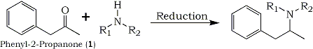
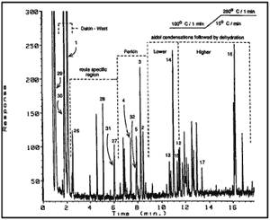

Abstract
The illicit synthesis of phenyl-2-propanone (P2P) in clandestine drug laboratories from phenylacetic acid and acetic anhydride in the presence of sodium acetate or pyridine, or from the dry distillation of phenylacetic acid and lead(II)acetate is examined. These two routes are investigated using capillary gas chromatography (GC) combined with vapor-phase Fourier transform infrared (FTIR) spectroscopy and electron impact mass spectrometry (EIMS) detection (GC-EMR-EIMS), and using nuclear magnetic resonance (NMR) spectroscopy to identify 21 reaction by-products. The mechanisms of the two reactions producing P2P are presented, along with the mechanisms giving rise to these by-products. This investigation has identified four reaction-specific compounds which can be used to differentiate the two synthetic methods.
Fig. 1

R1, R2 = H - Amphetamine R1 = H, R2 = CH3 - Methamphetamine
R1, R2 = CH3 - Dimethylamphetamine
Phenyl-2-propanone (Compound 1), commonly referred to as P2P, is an intermediate precursor in the manufacture of d,l-amphetamine, d,l-methamphetamine, and other similar phenethylamines (Fig. 1). Its prominent use in the illicit manufacture of amphetamine and methamphetamine has resulted in the United States Government controlling the commercial sale of P2P in 1980 (21 CFR 1308.12, Schedule II, 8501).
The scheduling of P2P has not, however, precluded the illicit manufacture of amphetamine or methamphetamine by this route. Indeed, the reductive amination of P2P remains a popular synthetic route for clandestine drug chemists. The variety of synthetic reductive routes in the literature which utilize P2P to synthesize amphetamine or methamphetamine has been the subject of a recent review1.
The control of P2P has seriously restricted its commercial availability to clandestine chemists. However, many clandestine chemists have modified their manufacturing schemes by synthesizing their own P2P. Thus, P2P is now illicitly produced from yet other precursors and has its own underground market value. The current 1991 values of P2P are reported to be between $1800 and $2000 per litre.
Many of the syntheses of P2P described in the literature are outlined in Table 12-41. Although all of these routes are viable, the clandestine manufacture of P2P has centered on Routes 1A, 1B, 2, and 8A. Routes 1A and 1B have dominated in the western and northwestern parts of the United States and are the subject of this paper. It is the authors' objective in this investigation to establish criteria by which these two synthetic routes can be distinguished on the basis of the presence or absence of specific by-products. Such information is necessary for the forensic chemist and the investigator to establish consistencies between precursors, notes, waste products, and the finished product recovered from a clandestine laboratory site; to substantiate informant statements concerning a clandestine laboratory operation; and to predict possible safety hazards prior to the seizure of a clandestine laboratory.
Table 1
Syntheses of P2P described in the literature.
| Route | Precursor and/or Reactants |
| 1 | Phenylacetic acid |
1A |
Acetic anhydride2-5 |
1B |
Lead(II)acetate6 |
1C |
Thorium oxide7-10 |
1D |
Barium(II)acetate11 |
1E |
Calcium(II)acetate12 |
1F |
Manganese carbonate13 |
1G |
Manganese oxide14,15 |
| 2 | α-Phenylacetoacetonitrile16-18 |
| 3 | α-Phenyl-β-methylene glycol19,20 |
| 4 | α-Phenylisopropyl alcohol21 |
| 5 | Phenylacylmalonic ester22,23 |
| 6 | Phenylacetyl chloride24,25 |
| 7 | α-Methylstyrene |
7A |
Thallium Nitrate26 |
| 8 | β-Methyl-β-Nitrostyrene |
8A |
Fe, H+27-31 |
8B |
Raney nickel32 |
8C |
Vanadium(II)chloride33 |
| 9 | Allylbenzene34 |
| 10 | Phenylmagnesium Bromide35 |
| 11 | Benzaldehyde36 |
| 12 | Benzene |
12A |
Chloroacetone, Aluminum Chloride37,38 |
12B |
Acetone, Manganese(III)Acetate39,40 |
12C |
O,O-Diprotonated Nitroolefin41 |
Fig. 2 [Enlarge]
![[Enlarge]](pictures/p2p-paa-fig2.gif){kind=link}
The total response chromatogram (TRC) of a
known clandestine sample of P2P synthesized
via Route 1B, using lead(II)acetate.
The dotted lines delineate regions of the TRC
whose compounds were produced as by-products
from the labeled competing reactions.
Experimental Procedure
All the samples were examined in the split mode (30:1) on a Hewlett-Packard Model 5980 gas chromatograph (GC) fitted with a 12-m by 0.32-mm inside-diameter fused-silica capillary column coated with 0.52 �m of cross-linked 5% phenylmethyl silicone (HP-5, Hewlett-Packard Scientific Inc., Palo Alto, California). The oven temperature program was as follows: initial temperature, 100�C; initial hold, 1 min; temperature program rate, 15�C/min; final temperature, 280�C; final hold time, 3 min. The eluent from the GC was serially detected by vapor-phase Fourier transform infrared (FTIR) spectroscopy (Hewlett-Packard Model 5965a) and electron impact mass spectrometry (ELMS) (HewlettPackard Model 5970).
The following compounds were obtained from Aldrich Chemical Co.: benzaldehyde (Compound 29), methyl benzoate (30), phenyl-2-propanone (1), benzyl acetate (26), diphenylmethane (28), bibenzyl (27), cis-stilbene (31), trans-stilbene (32), and dibenzylketone (2). The following compounds were synthesized by reacting the Grignard of benzyl bromide with P2P, followed by dehydration of the alcohol with acetic anhydride: E- and Z-1-phenyl-2-methylallylbenzene (3,4) and 1,1-dibenzylethene (5). The major product and isomeric ratios of this dehydration were established by nuclear magnetic resonance (NMR)/nuclear Overhauser enhancement (NOE) experiments, followed by GC examination to establish the order of chromatography. This correlated the respective spectral data with the corresponding isomeric compound. The compounds E- and Z-1,3-diphenyl-2-methyl-2-pentene-4-one (14, 15), and E- and Z-1,5-diphenyl-2-methyl-1-pentene-4-one (10, 11) were synthesized by two different routes42-44. The products of these reactions were-examined by GC-FTIR-EIMS and NMR-NOE to establish the identity of the isomeric aldol condensation products.
Results and Discussion
Figure 2 represents the chromatogram from the capillary GC examination of illicitly produced P2P using Route 1B. This full-profile chromatogram is annotated with brackets indicating the postulated mechanisms that formed the by-products. These mechanisms will be discussed later in the text. All components were inspected by capillary GC elution into a gas-phase FTIR detector followed by EIMS. The FTIR data subclassified the components as ketone (1710 to 1735 cm-1), ester (1735 to 1770 cm-1), formyl ester (17.35 to 1820 cm-1), phenolic (3500 to 3600 cm-1), α,β-unsaturated ketone (1650 to 1710 cm-1), aromatic (670 to 790 cm-1), and spa hybridized carbon-carbon double bonds (1540 to 1605 cm-1). The EIMS data subclassified the components into those containing an aromatic ring attached to a hybridized carbon (prominent 91 m/z), a β-methylstyrene group (prominent 117 m/z), and a β,β-dimethylstyrene group (prominent 131 m/z). These subclassifications were inspected manually and were also retrieved automatically using data massaging software to generate selective wavelength chromatograms from the FTIR data and single ion chromatograms from the EIMS data. Known clandestine samples of P2P synthesized by Route 1A or 1B which contained an abundance of components were examined by instrumental methods and also subjected to classical isolation techniques. Chemical separations were conducted by means of a bisulfite addition complex and Girard's reagent T. The aqueous sodium bisulfate extraction of the reaction mixtures removed most of the P2P present; however, higher ketones do not produce bisulfite adducts as easily because of the sensitivity of the additions to steric hindrance45. The water-soluble bisulfite-P2P addition product may be hydrolyzed with strong acid or base to regenerate P2P for examination. The nonbisulfite retained compounds were reacted with Girard's reagent T, a material known to react with ketones to also form water-soluble adducts, which allows separation of ketonic and nonketonic compounds. An organic extraction allowed clean isolation of all nonketonic compounds into an organic phase. These ketonic and nonketonic compounds were they. examined by GC-FTIR-EIMS.
The combination of the techniques of GC-FTIR-EIMS, aqueous bisulfite extraction, and Girard's reagent T, combined with the study of the mechanisms of these two reactions, enabled us to identify numerous impurities. The identification of these impurities was confirmed by alternate direct syntheses, commercial purchase, or structural analysis by NMR spectroscopy.
The results of spectral analysis by GC-FTIR-EIMS on the components illustrated in the chromatogram in Fig. 2 are compiled and listed in Tables, 2 and 3.
Route 1A, the Reaction of Phenylacetic Acid with Acetic Anhydride
The key to understanding the origin of by-products and their identity was established in the concept of the mechanisms involved in the reacting medium. Several review articles have appeared concerning the possible mechanism of the Dakin-West reaction, the decarboxylation of an α-acylcarboxylic acid to give a methyl ketone46,47. This mechanism may be conceptually broken down into a number of steps (Fig. 3). The first step is an acid-anhydride equilibrium. The second step is a proton removal from the activated methylene compound (mixed anhydride) by a base (sodium acetate or pyridine). The third step is an attack by the carbanion of the mixed anhydride on a carbonyl group of the acetic anhydride. The fourth step is the decarboxylation of the β-keto acid to yield P2P (Compound 1). This stepwise approach is only conceptual, since there is evidence46 that the mechanism may involve a cyclic intermediate (Fig. 4). It can he seen from examination of Fig. 4 that, depending on the concentration of acetic anhydride versus the mixed anhydride, two mixed anhydride molecules may condense to give two different products. The product formed is dependent on whether the cyclic intermediate is orientated head-to-tail or head-to-head. The head-to-head transition state generates dibenzylketone (Compound 2), which has been previously described5. From this understanding of the mechanism giving rise to P2P and dibenzylketone, the conclusion can be drawn that, if an excess of acetic anhydride is not used in the reaction, the formation of dibenzylketone will be favored.
{kind=link}
{kind=link}
Yet another group of impurities result from a related mechanism called the Perkin reaction48-50. These impurities result when the concentration of P2P increases and substantial amounts of the mixed anhydride remain [that is, insufficient acetic anhydride to complete the third and fourth conceptual steps of the reaction (Fig. 3)]. The Perkin reaction is outlined in Fig. 5. The reaction is initiated from the activated methylene compound, which condenses with the carbonyl of P2P. This condensation leads to an intramolecular cyclization followed by decarboxylation-dehydration, resulting in the by-product Compounds 3, 4, and 5. Compounds 6 and 7, which are also formed by this route, may he present in illicit P2P samples.
{kind=link}
Active methylene compounds are not restricted to the mixed anhydride in this reaction mixture. Depending upon the concentration and type of base used (pyridine, sodium acetate, calcium acetate, and so forth), P2P can become a carbanion source. Condensation with a second molecule of P2P or other carbonyl-containing compound forms aldol condensation products51. These keto-alcohols undergo esterification, followed by elimination of acetic acid (Fig. 6), to yield the α,β-unsaturated ketones Compounds 8 and 9 (kinetic products) and 14 and 15 (thermodynamic products), along with the unconjugated ketones 10, 11, 12, and 13. In actual P2P reaction mixtures, only ketones 12, 13, 14, and 15 were detected. This is most probably the result of reaction conditions which favor the thermodynamic enolate of P2P and the subsequent transition state for dehydration of these aldols, resulting in extended conjugation in the products. For clarity and completeness, vapor-phase FTIR and EIMS spectral data for Compounds 10 and 11 generated from alternative syntheses have been included in Table 2 and Table 3.
{kind=link}
{kind=link}
Condensation of a third molecule of P2P with Compound 14, followed by an intramolecular aldol condensation-dehydration, produces the prominent by-product Compound 16 under basic conditions (Fig. 7). A similar condensation of Compound 14 with acetic anhydride yields Compound 17.
{kind=link}
Other condensations of activated methylene compounds (that is, P2P and dibenzylketene) result in the myriad byproducts (Compounds 18, 19, 20, 21, and 22) shown in Fig. 8. Furthermore, the situation may potentially become even more complex as the enolizable ketones (Fig. 4) are esterified by acetic anhydride to their E- and Z- enol acetate isomers. The E- and Z- enol acetates of P2P (Compounds 23 and 24), described by Kiser, were found by this study to be route-determining markers for the reaction of phenylacetic acid and acetic anhydride to manufacture P2P. The mechanism for the formation of these two enol acetates is shown in Fig. 9, and the vapor-phase FTIR spectra and EIMS spectra are found in Fig. 10 and Fig. 11, as well as in Table 2 and Table 3.
{kind=link}
{kind=link}
{kind=link}
{kind=link}
Route 1B, the Reaction of Phenylacetic Acid with Lead(II)Acetate
The mechanism for the reaction of phenylacetic acid and lead(II)acetate has not been addressed in the literature. The cyclic transition state outlined in Fig. 12 is one reasonable possibility. The six-membered ring intermediate would be highly favored and would yield the β-keto acid of P2P, which subsequently decarboxylates to P2P. The literature regarding the oxidation of phenylacetic acid by lead(IV)acetate supports this postulate52,53. Furthermore, of the four products characterized (Fig. 13) (Compounds 25, 26, 27, and 28) in the literature54, only benzyl acetate (26), bibenzyl (27), and diphenylmethane (28) were found in illicit reaction mixtures of P2P when synthesized through Route 1B. Bibenzyl (27) and diphenylmethane (28) were found by this study to be the route-specific compounds. The vapor-phase FTIR spectra and EIMS spectra of these two compounds are found in Fig. 14 and Fig. 15, as well as in Table 2 and Table 3. The literature indicates both electron transfer and free radical mechanisms in the oxidation of phenylacetic acid with lead(IV)acetate; both pathways may be operative in lead(II)acetate. Electron transfer may be used to rationalize the formation of P2P, while a free radical mechanism must be used to rationalize the formation of bibenzyl and diphenylmethane. In the examination of illicit P2P synthesized by Route 1B, benzyl phenylacetate (25) was not found. Davies and Waring52 found that, if comparable quantities of phenylacetic acid and lead(IV)acetate are reacted, the major radical formed is a methyl radical, leading to benzyl acetate (26). However, if a large excess of phenylacetic acid is used (8:1), the formation of the benzyl radical leading to benzyl phenylacetate is favored. We have examined instructions seized from clandestine laboratories using this method and have noted that they call for a slight molar excess of lead(II)acetate. Clearly, this quantity of lead(II)acetate fails to promote the formation of benzyl phenylacetate in Route 1B.
{kind=link}
{kind=link}
{kind=link}
{kind=link}
The in situ formation of acetic anhydride from the heating of lead(II)acetate will result in by-products identical to those produced through Route 1A by the described Dakin-West, Perkin, and aldol condensation reactions.
Conclusions
Illicit phenyl-2-propanone (P2P) synthesized by either the reaction of phenylacetic acid with acetic anhydride in the presence of sodium acetate or pyridine (Route 1A), or the dry distillation of phenylacetic acid and lead(II)acetate (Route 1B) has been studied. Reaction mechanisms for both routes leading to the target compound and a variety of by-products are discussed. Vapor-phase FTIR data and EIMS data for these compounds are presented. While this investigation has established numerous reaction by-products in common between the two routes, four route-specific compounds have been identified which may be used by the forensic chemist to differentiate between the two routes. For Route 1A, the route-specific compounds are identified as the E- and Z- enol acetates of P2P, and for Route 1B, the route-specific compounds are identified as bibenzyl and diphenylmethane.
{kind=link}
{kind=link}